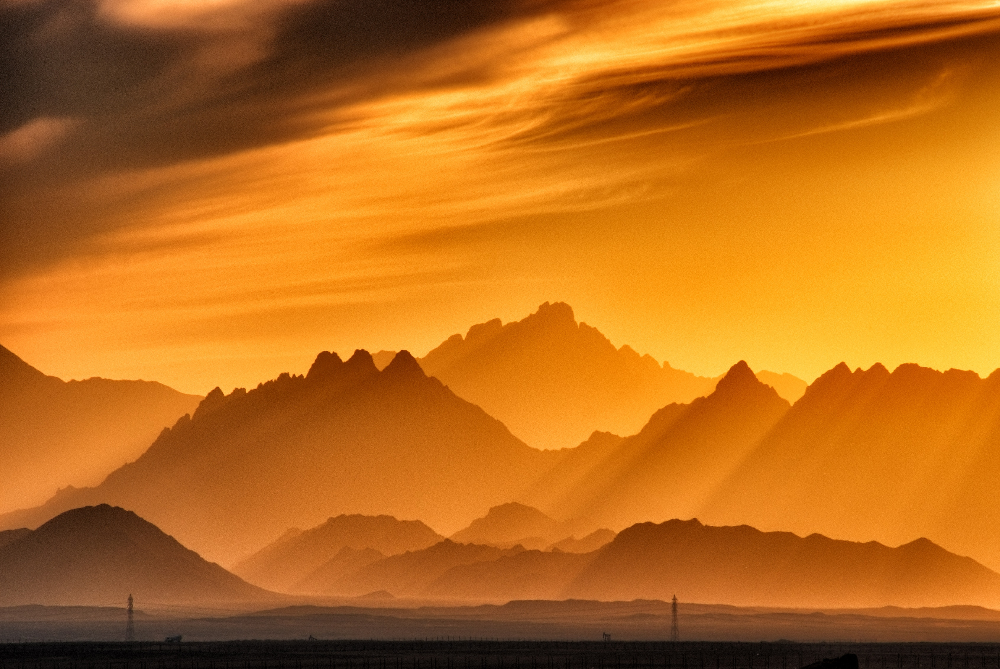
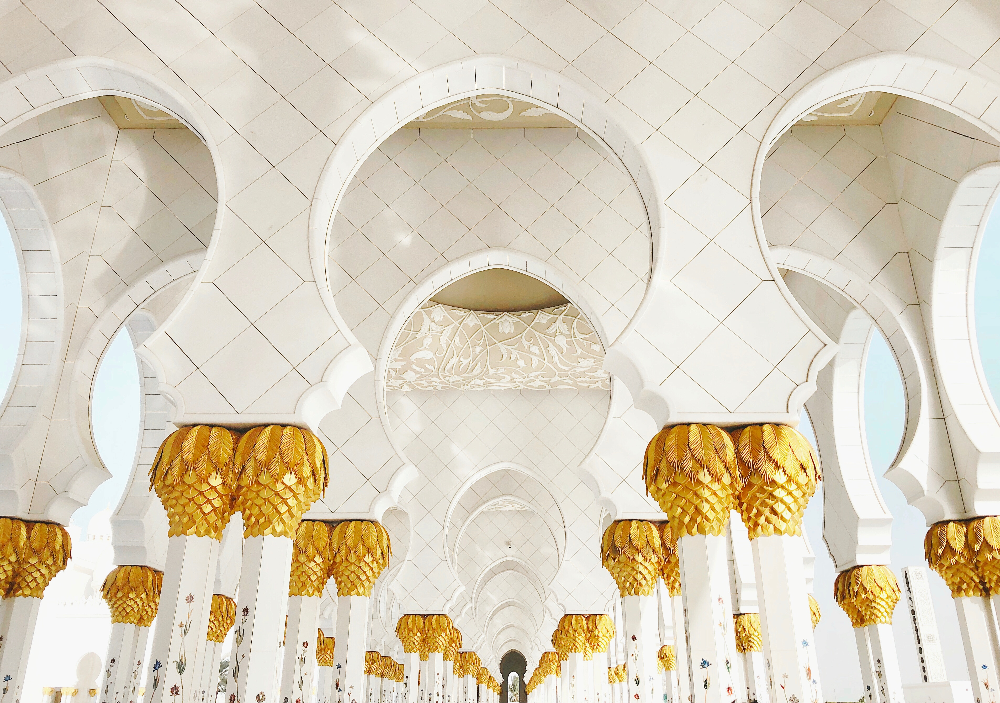
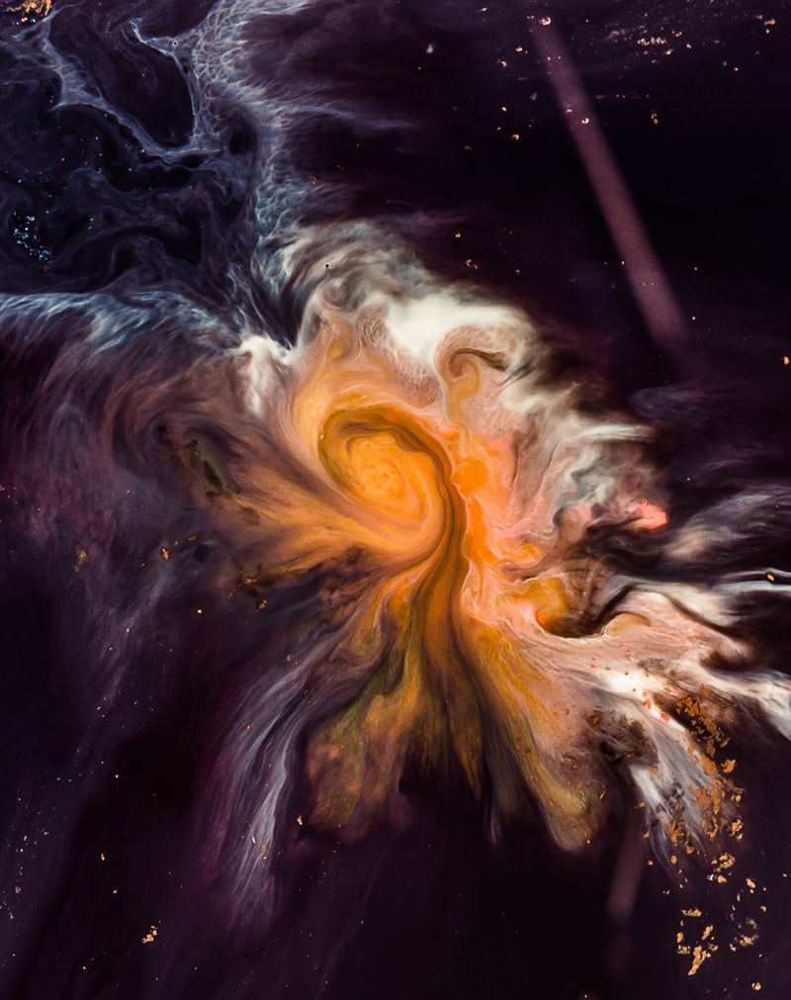
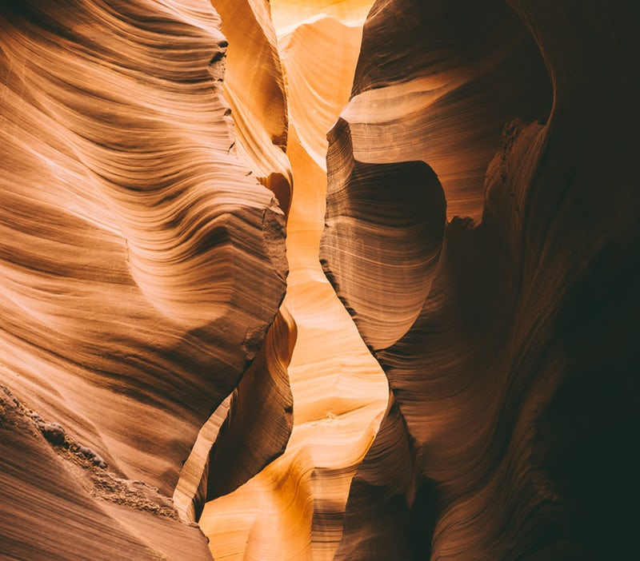
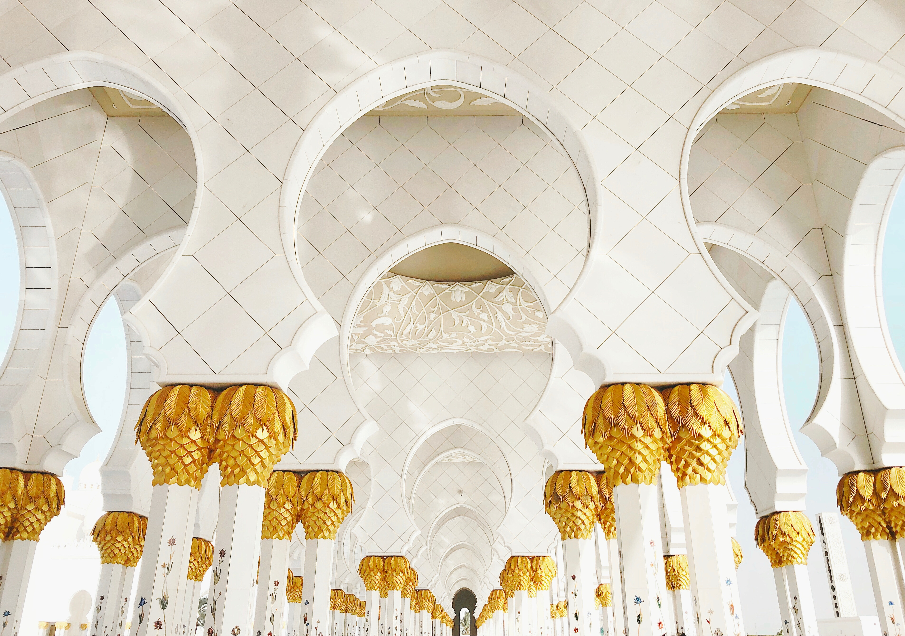
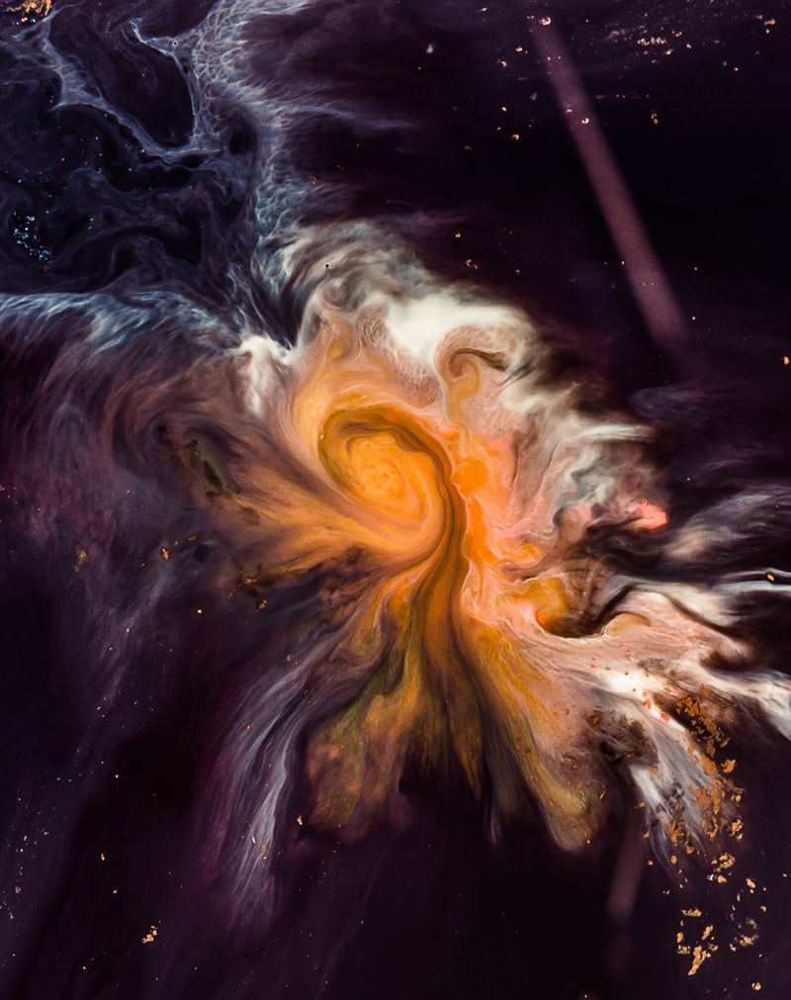
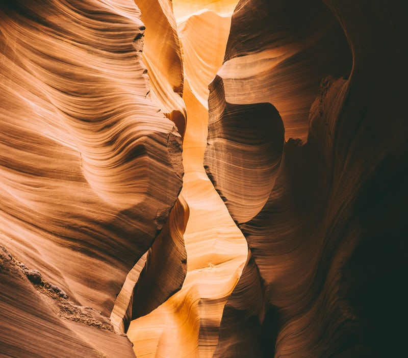
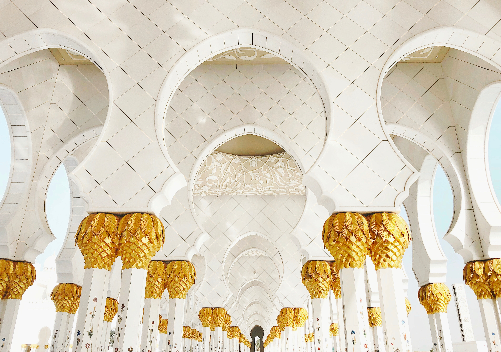
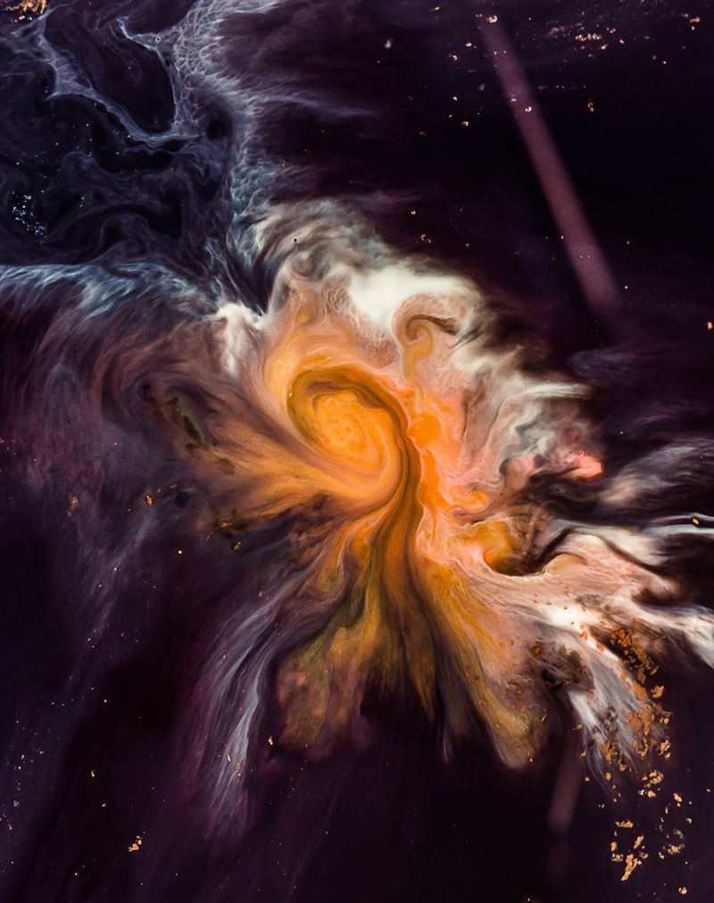
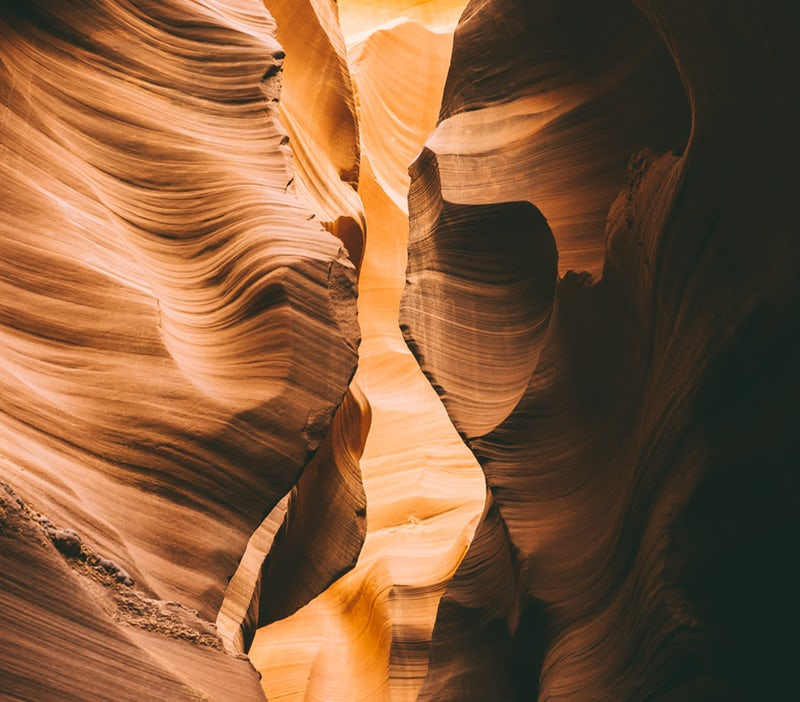

{kind=link}

Centered

Time to meditate!

Sad
Happy

 





Denna sidan visar massa fina guld bilder och katter
Guld är kompakt, mjukt, glänsande och den mest formbara och kemiskt tåliga av alla kända metaller. Rent guld har en klart gul färg som
Guld är kompakt, mjukt, glänsande och den mest formbara och kemiskt tåliga av alla kända metaller. Rent guld har en klart gul färg som
Guld är kompakt, mjukt, glänsande och den mest formbara och kemiskt tåliga av alla kända metaller. Rent guld har en klart gul färg som
Guld är kompakt, mjukt, glänsande och den mest formbara och kemiskt tåliga av alla kända metaller. Rent guld har en klart gul färg som
Denna sidan visar massa fina guld bilder och katter
Guld är kompakt, mjukt, glänsande och den mest formbara och kemiskt tåliga av alla kända metaller. Rent guld har en klart gul färg som traditionellt har ansetts tilltalande, men är så mjukt att det ensamt knappast duger till någon teknisk användning. Hårdheten kan dock ökas genom legering med mindre mängder av andra metaller och guldet blir då användbart i många sammanhang.
Rosorna är plockade i amazonas djupa skogar
Guldets speciella egenskaper och sällsynthet har gjort det eftertraktat och högt värderat. Därför har guld i sig fungerat som betalningsmedel sedan urminnes tider och använts till mynt.


